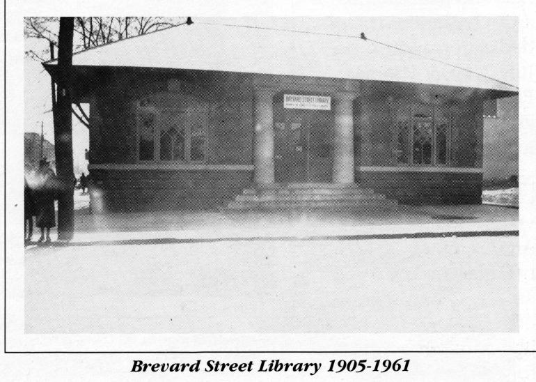
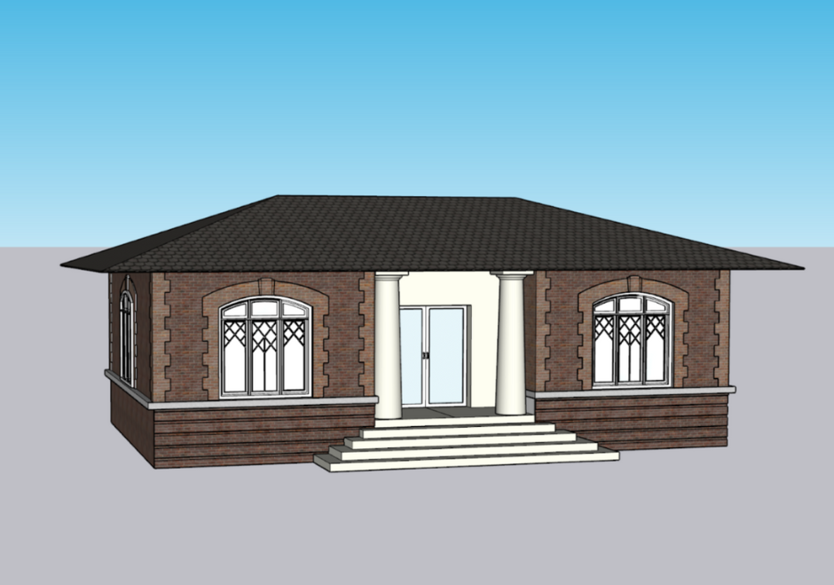
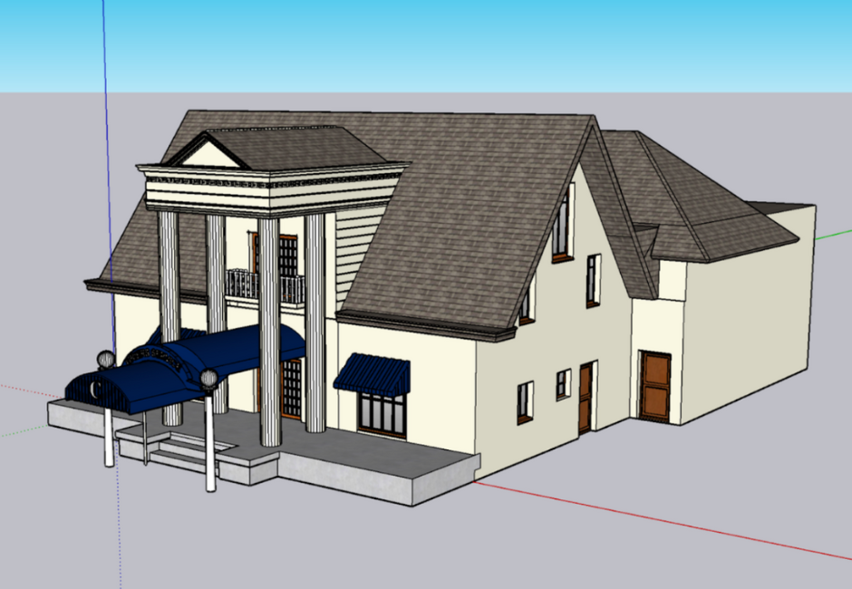
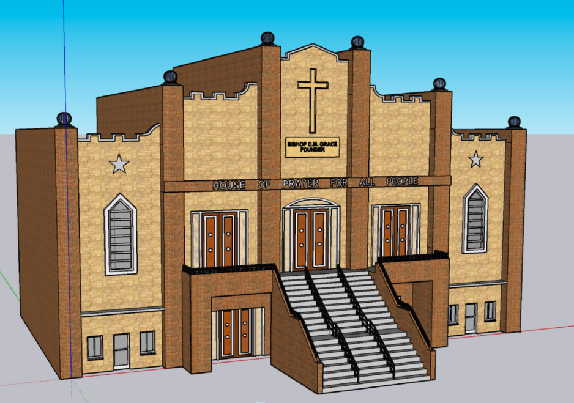

← Back to Projects
City of Charlotte Urban Renewal
During the summer of 2022, I served as a researcher for a collaborative project between JCSU University and Duke University. Our mission was to develop a virtual reality (VR) application aimed at preserving the Black history that was lost during Charlotte's urban renewal. Based at Duke's Department of Computational Media, Arts, and Culture, I digitized historic maps of Charlotte using ArcGIS, managed the metadata for over 500 buildings, and created architectural models in SketchUp.



